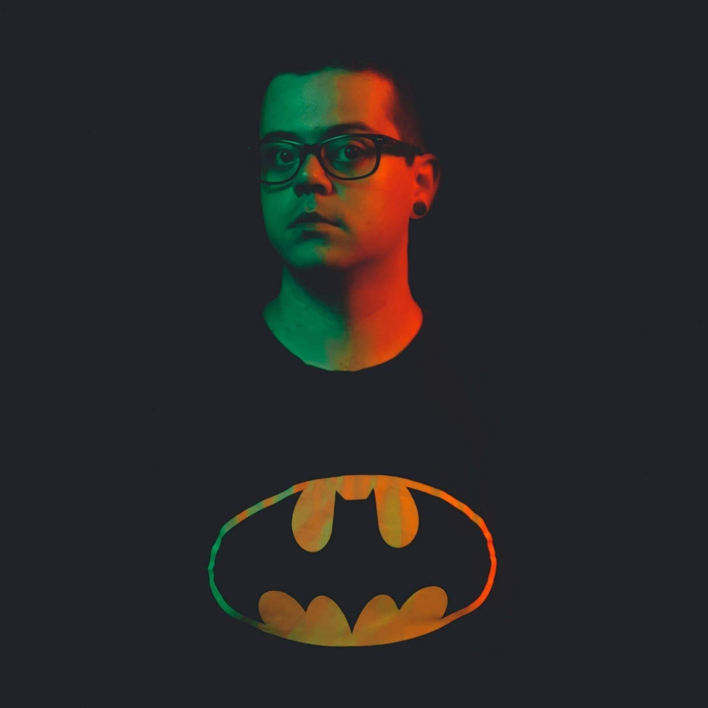
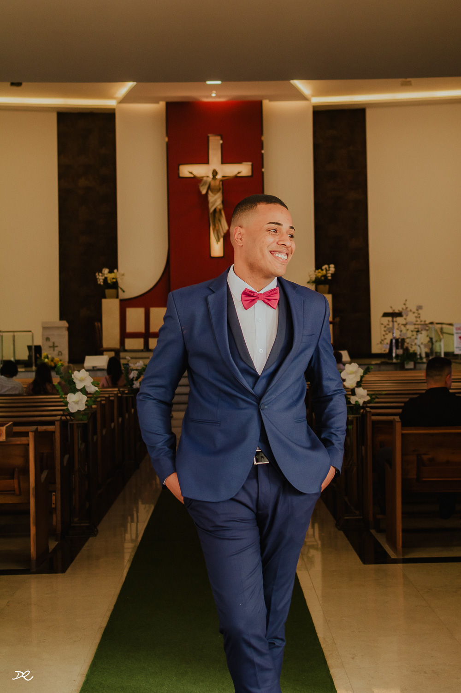

Riso,
Luz,
Amor
(publicitário, designer
e fotógrafo desde 2014)
(faço graça o dia inteiro
para que vocês esqueçam
que tem uma câmera ali)

Davi Rodrigues, de Taubaté. Publicitário, pós-graduado em design gráfico e com MBA em marketing digital, fotografando desde 2014 — quando uma aula na faculdade virou o resto da história. Continua trabalhando como designer, o que talvez explique a mania de enquadramento e a obsessão por luz. Casado desde 2013. Faz crossfit, assiste anime e faz graça o casamento inteiro para que ninguém lembre que tem um fotógrafo na sala.

Não fotografo eventos. Faço parte da história de famílias.
A história
inteira
Aquela frase acima não é slogan de efeito. Está na ordem desta lista — que é a ordem em que essas coisas acontecem na vida de uma família.
- Noivado2
- Casamento civil32
- Casamento religioso51
- Chá revelação10
- Batizado13
- Aniversário infantil72
- Debutante14
- Festas e eventos8
- Ensaios+130
83 casamentos. 202 eventos. Mais de 130 ensaios. Desde 2014.
Sua história começa em qual desses?
me chamaComo é o dia
-
Semanas antes — o ensaio
O trabalho não começa no dia. Todo casamento e toda festa de quinze anos tem um ensaio antes, sempre incluso — e ele não é cortesia de venda, é a primeira etapa. Serve para vocês me conhecerem, para a família me conhecer, e para eu descobrir como vocês são quando ninguém está olhando. O efeito aparece depois: no dia, basta eu apontar a câmera e vocês já riem, porque já sabem o que vem. É daí que vem a leveza que os casais comentam — não é sorte, é ensaio.
-
2h antes — making of
Chego quando a pele já está pronta, porque nenhuma noiva gosta de foto antes disso. Fotografo o vestido, os acessórios, o batom, os cílios. Nunca trabalho sozinho: comigo vai sempre a Mariana, e é ela quem acompanha a troca de vestido. Quando a Mariana não pode, quem assume o lugar dela é a minha esposa — nunca vai faltar uma mulher no quarto da noiva. Faço as últimas fotos dela pronta e seguimos para a igreja.
-
Cerimônia
O protocolo da igreja, do começo ao fim.
-
Festa — 4h
Aproveito a chegada dos convidados para fazer um ensaio do casal, com o salão ainda vazio. Depois: entrada, discurso, alimentação, valsa, abertura de pista, buquê e encerramento. Na maior parte da festa eu fico com um dos noivos e a Mariana com o outro — assim ninguém perde a reação de quem está do outro lado.
-
Equipamento
Duas câmeras, flash, LED e tripés. O resto se decide na hora, olhando a luz que o lugar tem.
O combinado
O que vocês recebem
- O ensaio antesIncluso em todo casamento e toda festa de quinze anos. Não é brinde: é a etapa que faz o resto funcionar.
- Todas as fotosNão vendo pacote e não conto cliques. Não existe número máximo de fotos, porque um limite me obrigaria a parar de fotografar no meio do dia de vocês.
- Sempre inclusoUm link com todas as fotos do casamento, prontas para baixar.
- Se vocês quiseremUma caixa de MDF com cinco fotos impressas e um pen drive com o evento inteiro.
- Álbum impressoTrabalho com álbum, orçado à parte.
- PrazoTrinta dias. A edição é foto por foto, sem inteligência artificial em nenhuma etapa.
- VídeoNão faço. Indico quem eu confio e com quem já tenho parceria rodando.
O que não pode falhar
- Nenhuma foto em um lugar sóFotografo em câmera com gravação simultânea em dois cartões. Se um falhar no meio da cerimônia, o outro já tem tudo.
- Nenhum equipamento sozinhoDuas câmeras comigo, mais as da segunda fotógrafa.
- Ninguém sozinhoNunca vou a um evento sem uma segunda fotógrafa.
- O cartão fica reservadoDepois do evento, o cartão de memória não é reutilizado até as fotos estarem entregues.
- Cópia na nuvem e no computadorOs arquivos ficam guardados em dois lugares, e por três anos garantidos em contrato.
- Contrato de quatro páginasTodo mundo comenta que é o maior que já viu. Prefiro que esteja escrito a que fique combinado de boca.
Você deixou tudo muito leve, amei de verdade. Amamos as fotos.Ana e Victor
FAQ
Vamos conversar
Chamar no WhatsApp